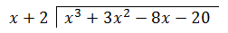
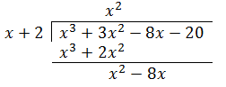
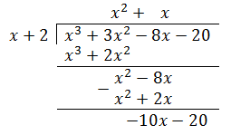
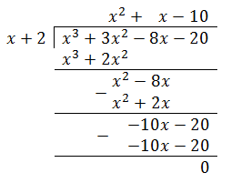

Dividing Polynomials by Monomials
Before we begin this lesson, be sure to remember the quotient rule for exponents (outlined below for your convenience).
\[\frac{x^m}{x^n} =x^{m-n}\]
Whenever you divide a variable that has a higher power by the same variable with a smaller power, you essentially subtract the higher power by the smaller power, and set the base to the resulting power. For example:
\[\frac{9x^5}{3x^2}\]
To simplify this, separate the coefficients from the variables, and divide those separately. Then, divide the variables. This will yield \(\frac{9}{3}*\frac{x^5}{x^2}\), which is equal to \({3x^3}\).
Not all divisions will be as simple as this; you will often encounter polynomials rather than monomials. To divide these, remember this property:
\[\frac{a+b}{c}=\frac{a}{c}+\frac{b}{c}\]
You can essentially split any polynomial into a number of monomial fractions, making it significantly simpler to simplify. For example:
\[\frac{6x^3+9x^2+12x}{3x}\]
Can be split into the following and simplified:
\[\frac{6x^3}{3x}+\frac{9x^2}{3x}+\frac{12x}{3x}=2x^2+3x+4\]
If you ever consider it necessary to check your answers, multiply the quotient by the divisor and check if it equals the dividend. If they are equal, then you divided correctly; if not, then you messed up somewhere. To remind you what is the dividend and what is the divisor, look below.
\[\frac{\text{dividend}}{\text{divisor}}=\text{quotient}\]
Dividing Polynomials by Polynomials
When you have to divide a polynomial by something larger than a monomial, however, you cannot use the same method that we have been using thus far. Instead, you must rely on the faithful old method of long division. Let’s say we wanted to simplify the expression:
Then, we would try to divide \(x^3 + 3x^2\) by \(x + 2\). To find the term that we multiply our divisor by to divide \(x^3 + 3x^2\), we divide the leading term of the divided by the leading term of the divisor, or \(x^3\) by \(x\), to get \(x^2\). We then put that in and subtract, then bring down the next term:

For the second term, we would again divide the leading term by the leading term, getting us x. We then add this behind the \(x^2\) in the quotient thus far.

Subtracting \(2x\) from \(-8x\) would yield \(-10x\), which is then divided by our divisor to finalize our quotient.
